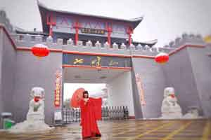

- 七峰山生态旅游区
七峰山生态旅游区，位于河南省南阳市方城县杨集乡境内，距方城市区约15公里。七峰山又称七顶山，古称七石山，属伏牛山东南麓，淮河水系的澧河上游，总面积5100公顷，森林覆盖率76%。《魏书·地理志》载:"七峰山古称七石山，因山有七峰列峙，如笔架然，故名。"山上有古代楚长城，被称为"中国长城之祖"。七峰雪霁与泉岩瀑布，为方城传统八大景中的两大自然景观。
2015年9月22日，南阳市方城县七峰山生态旅游区上榜国家4A级旅游景区名单，这是方城县两年来第二个荣膺国家4A的景区。2016年电影《新西游记之大战女儿国》开拍仪式将在方城七峰山生态旅游区隆重举行。
2016年12月5日，国家旅游局通报，七峰山被通报批评。
景区简介
方城县七峰山生态旅游区位于河南省南阳市方城县杨集乡境内，距方城市区约15公里。七峰山又称七顶山，古称七石山。《魏书·地理志》载:"七峰山古称七石山，因山有七峰列峙，如笔架然，故名。"山上有古代楚国长城，被称为"中国长城之祖"。七峰雪霁与泉岩瀑布，为方城传统八大景中的两大自然景观。
七峰山生态旅游区地处伏牛山余脉的浅山区，方圆约105平方公里，山势峭拔，壁立千尺，层峦叠嶂，洞谷险幽，飞瀑流泉，风景奇秀。境内以七峰山为主峰向四周逶迤延展，形成多条山岭和山谷，地势总体中间高四周低，主峰海拔高度760.3米，是方城县的最高峰。山顶和山谷水道及部分陡峭山崖裸露有花岗岩风化石壁或基岩及滚石，形成一道道美丽风景。
景区地跨长江、淮河两大流域，水系为多条山涧溪流，常年水流不断，水质良好，汛期水量较大。七峰山山阴沟壑顶部有一处低温温泉，出水温度为25℃。
景区景观:


景区林木植被丰茂，为河南省级森林公园。七峰山林区土地总面积5100公顷，有林地面积3550公顷，全区森林总蓄积5.4万m3。该地区属伏牛山区丘陵常绿落叶阔叶林带，森林植被区系以北亚热带森林植被景观为主。主要树种有:油松、马尾松、柏、水杉、栎类、板栗、麻栎、黄檀、合欢、野核桃、枫杨等50种乔木为多，还有野山楂、珍珠花、山芝麻叶、连翘荆条为主的30多种灌木，以及何首乌、百合、贝母、丹参、葛藤等中草药50多种。景区由于其特有的气候、土壤和地形条件，造就了这里独特的植物生存环境，这里物种十分丰富。这里有中草药50多种，各种野果也有几十种，不愧为"世外天然药草野果园"，养生度假的理想地。
楚国长城:
七峰山的楚长城号称长城之父，在海内外声名远播，为旅游区的一大亮点，而且结合整体环境的生态美化，自然与人文结合完美。景区以自然旅游资源为主体，以古长城文化、养生长寿文化建设为内涵，以休闲娱乐、养生度假、生态保护等功能于一体的低山峡谷综合型旅游区。
七峰山的楚长城号称长城之父，在海内外声名远播，为旅游区的一大亮点，而且结合整体环境的生态美化，自然与人文结合完美。景区以自然旅游资源为主体，以古长城文化、养生长寿文化建设为内涵，以休闲娱乐、养生度假、生态保护等功能于一体的低山峡谷综合型旅游区。
服务设施
服务度假设施有:大型停车场、长寿山庄、度假木屋、养老院、绝壁攀岩、北山庄园、湖滨别墅等。
交通地址:
七峰山生态旅游区，位于河南省南阳市方城县杨集乡境内，距方城市区约15公里。